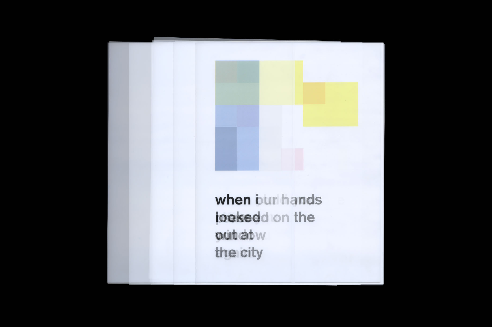
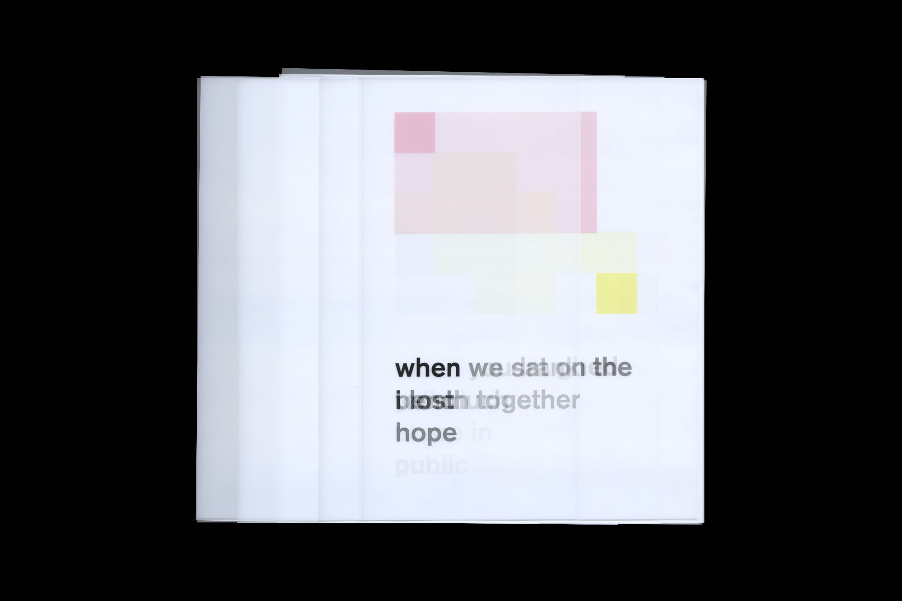
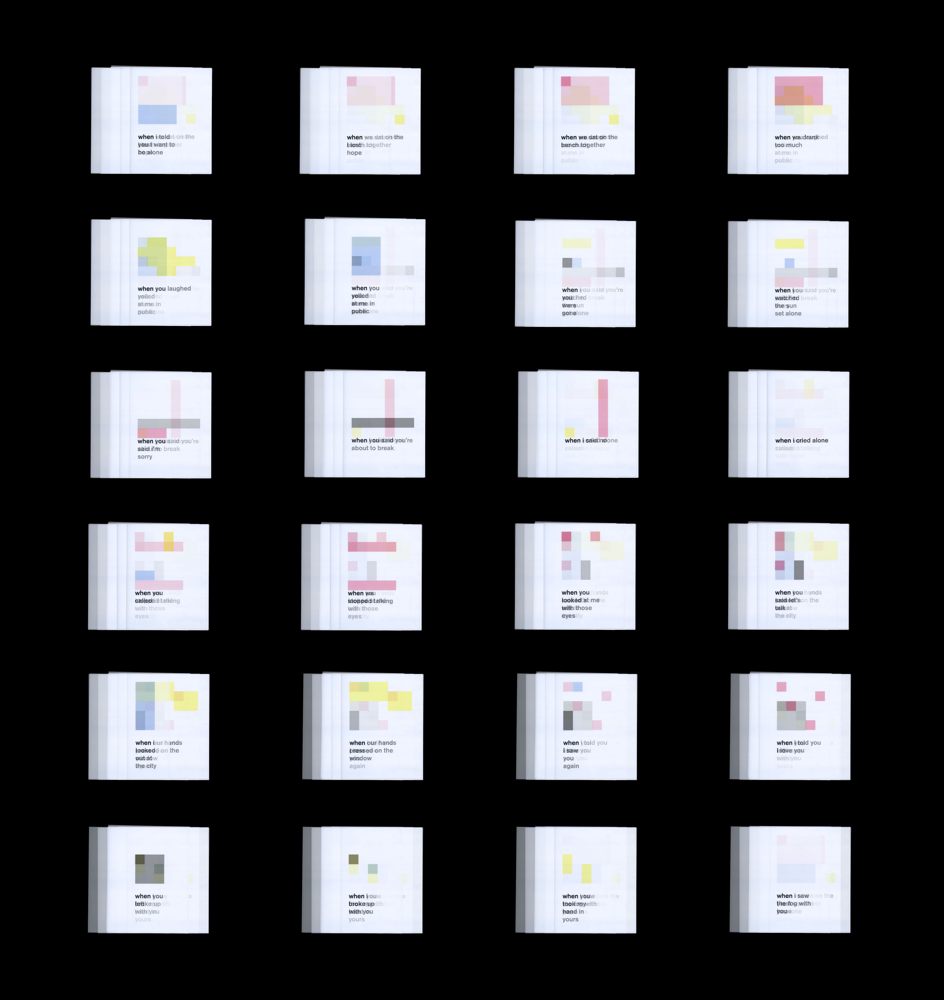

Why is it that we can remember feelings but not the words? Memories are chronological, but they are triggered by anything and the feelings come without warning. This loose-leaf book is an exploration of visualizing and abstracting emotions from my personal experiences, the painful ones and the lovely ones. In a way, these memories, this stack of mylar paper, is a layered representation of who I am as the CMYK colors mix to create new colors and build life out of those moments and feelings.


